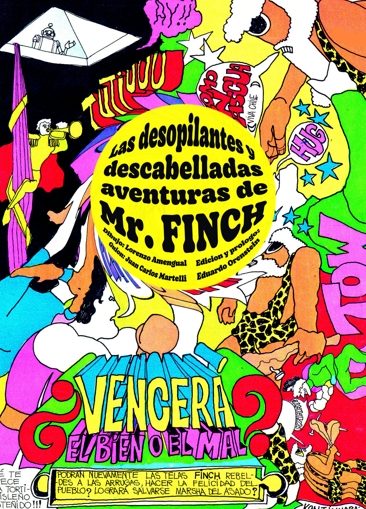

Las desopilantes y descabelladas aventuras de Mr. Finch
Dibujo Lorenzo Amengual, guión Juan Carlos Morelli
Edición a cargo y prólogo Eduardo Orenstein
23,5 × 33 cm · Tapa blanda con sobrecubierta calada · 60 pp.
Si no fuera porque lo dice en el título, diríamos que esta historieta es descabellada y desopilante, pero además podemos agregar alucinógena, onírica, psicodélica, irreverente y provocativa. Un viaje con destino imprevisto del héroe, Mr. Finch y su hermosa secretaria Marsha, perfectamente sincronizado con los vigorosos años de la década de los 60, la de los hippies, los happenings, el Di Tella, y el consumo desenfrenado en una Argentina opulenta a pesar de la sucesión de gobiernos militares represivos.
Comprar